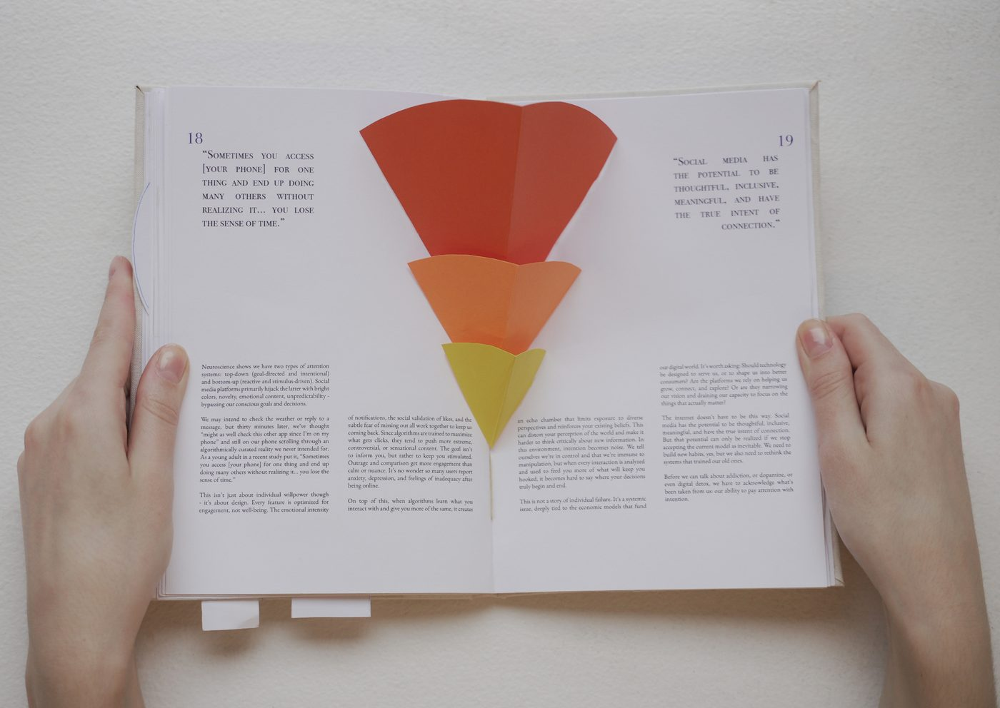
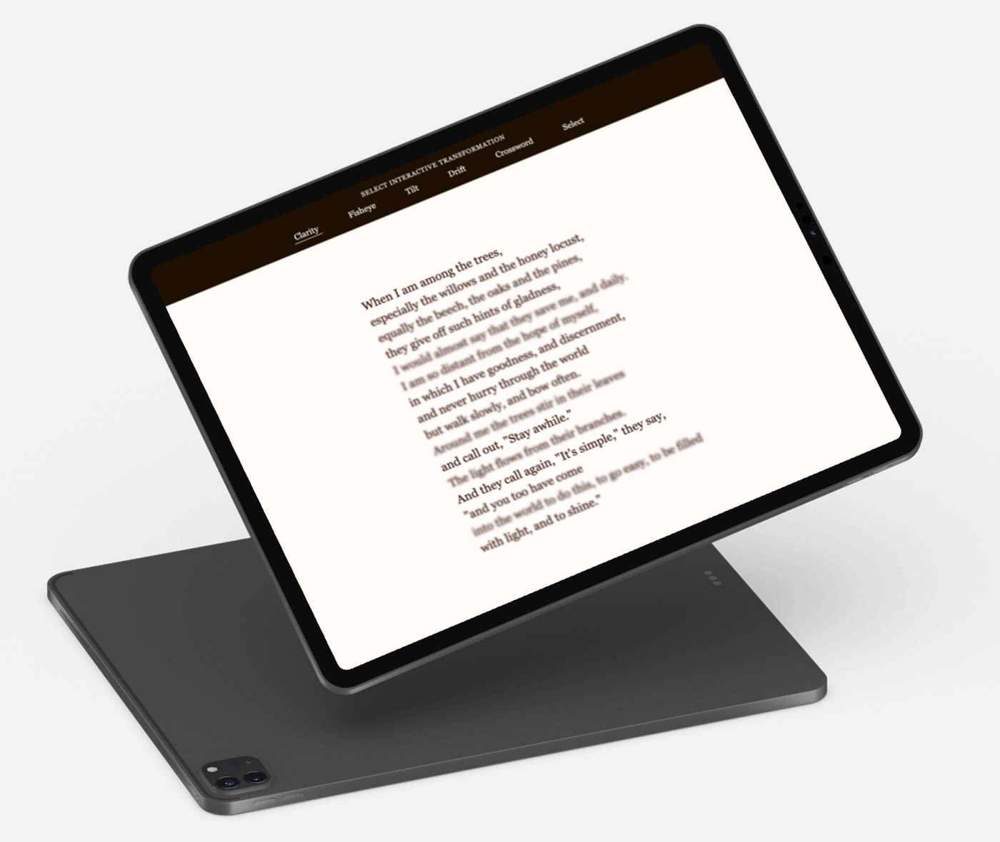
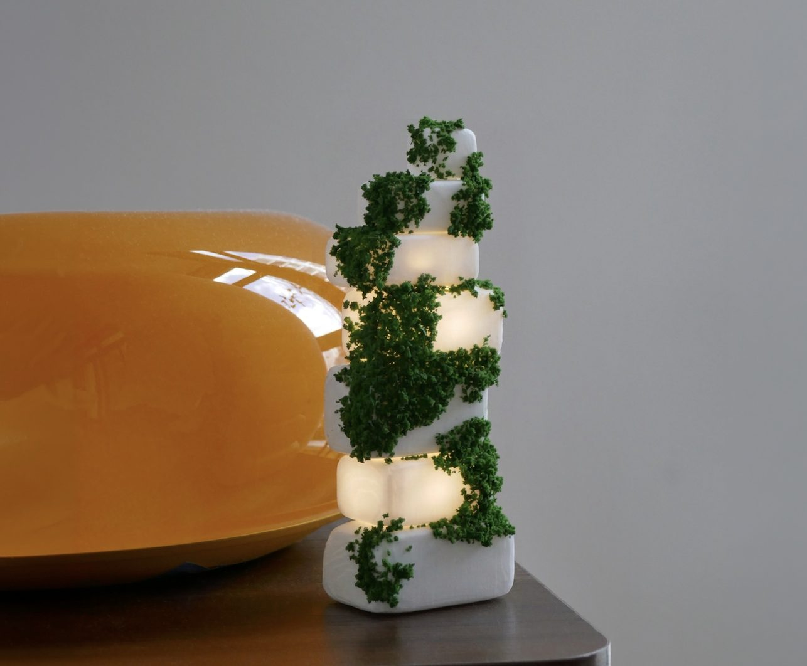

CREATIVE
Through AI's Eyes
InteractionUsability
Interactive museum exhibit helping visitors explore how AI recognizes objects through hands-on experimentation.

For Stillness
ProductVisual Design
Handcrafted pop-up book inviting readers to slow down and reflect on their relationship with digital technology.

Among The Trees
AIInteractionLive Website
Interactive poetry website exploring how AI-assisted typography can shape the experience of reading Mary Oliver’s words.

Cairn
IoTAIData Viz
Speculative smart home system exploring how shared emotional signals could help people better understand those they live with.
Watch Out
AIRapid PrototypingAward-Winning
AI-generated short film revealing how a discarded cigarette can turn a peaceful forest into a wildfire.